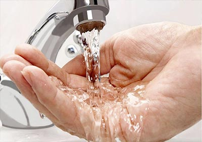

Без посредников
Являемся официальными дилерами, работаем по ценам производителя
Профессионалы
Более 8 лет занимаемся устройствои инженерных систем

Скидки и акции
Скидки до 20% на оборудование и монтажные работы

Септик и станции биологической очистки

Вода под ключ
Обустройство скважин и кессонов
Дренаж и водоотведенеи
Пройдите бесплатный тест-калкулятор и
Получите подбор подходящих септиков и предварительную стоимость монтажа в Москве и Московской области
Евгений Сергеевич
Главный инженер МСК СЕПТИК ГРУПП
После получения ваших ответов мы будем на 80% владеть ситуацией и сможем сократить Ваше время на уточнение деталей.
После прохождения теста вы получите:
Рекомендации по выбору бренда и модели септика
Рекомендации по выбору бренда и модели септика
Типы септиков по способу очистки стоков:
-
Аэрационная
установка -
Септик с
биофильтром -

септик с
почвенной
доочисткой -
Накопительные
септики